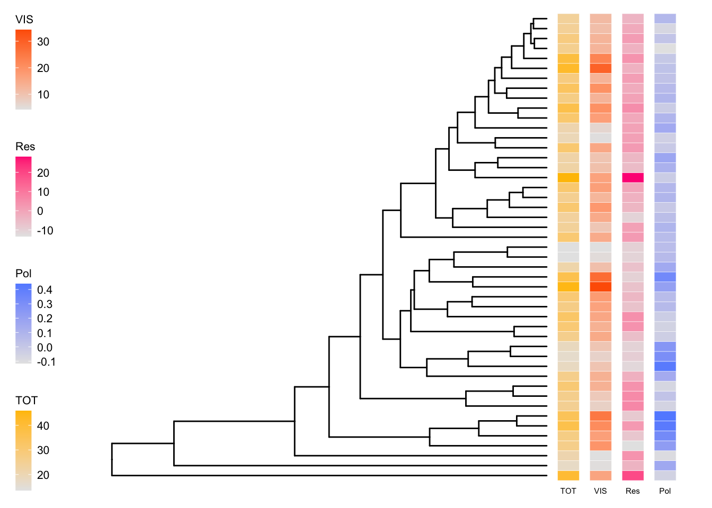

Main manuscript
Figures
Figure 1 - Phylogenetic tree with traits
# Prepare data sets ###################
Reflectance <- read.csv(here::here("Data/FromCode/Reflectance_PData.csv"))[-1]
RPDataAgg <- read.csv(here::here("Data/FromCode/PolarzElytraRefl.csv"))[-1]
RPDAgg1 <-
RPDataAgg %>%
dplyr::select(-ind, -spp) %>%
dplyr::select(phylogeny_name, everything()) %>%
dplyr::group_by(phylogeny_name) %>% # group
dplyr::summarise(across(everything(), list(mean))) %>%
select(1,9) %>%
arrange(phylogeny_name)
Cons1agg <- read.csv(here::here("Data/FromCode/ConsolidatedReflectivitySpp.csv"))[-1] %>%
arrange(phylogeny_name) %>%
mutate (Pol = RPDAgg1$ElytrPol_1)
# Convert to a data frame for the comparative.data function
Cons1agg <- as.data.frame(Cons1agg)
head(Cons1agg)## phylogeny_name TOT VIS NIR Res size FRS FRS2 Pol
## 1 Anomala_antigua 17.23732 4.54861 28.27315 -3.4550833 1.7660 -6.924027 -0.8879557 0.16096972
## 2 Anoplognathus_abnormis 27.27081 16.53003 36.64233 -6.8717882 1.5755 -11.233399 0.1649212 0.06430368
## 3 Anoplognathus_aeneus 22.10221 10.40414 32.27222 -5.2159832 3.1125 -9.121189 6.1161459 0.11204259
## 4 Anoplognathus_aureus 44.93754 34.33124 54.20353 -6.8212959 1.7140 -12.509174 1.5204663 0.20560559
## 5 Anoplognathus_boisduvalii 31.14445 17.30305 43.21203 -1.0624889 2.6054 -5.481693 1.9189657 0.08846901
## 6 Anoplognathus_brevicollis 27.43900 12.86929 40.14934 0.2362219 2.5140 -3.852648 -2.1868429 0.08712699# Modify to make it compatible with tree tips
ConsAgg<- as.data.frame(Cons1agg) # create new data frame
rownames(ConsAgg) <- ConsAgg[, 1] # make species the row names
ConsAgg <- ConsAgg[, 2:length(ConsAgg)] # eliminate spp name (redundant)
# Separate data frames
TOTdf <- ConsAgg %>% dplyr::select(TOT)
VISdf <- ConsAgg %>% dplyr::select(VIS)
Resdf <- ConsAgg %>% dplyr::select(Res)
Poldf <- ConsAgg %>% dplyr::select(Pol)
# Combine with phylogeny ###################
# Phylogeny
trees <- ape::read.tree(here::here("Data/XMAS_mat2b_bst2ef_set23nn2_pinct.nwk"))
# read the tree
MCCtree.raw <-
ape::read.nexus(here::here("Data/xmas_mat2b_bst2ef_set23nn2_pinct_med.tre"))
# Prune extra spp in the tree, not contain in the test sample
species.MCC <- as.data.frame(unique(Cons1agg$phylogeny_name))
# Convert to "row names" (required for following steps)
row.names(species.MCC) <- species.MCC[, 1]
# Make sure the names in data set and tree match
temp.MCC <- name.check(MCCtree.raw, species.MCC)
# This step would be neccesary if the tips had been different.
# MCCtree <- drop.tip(MCCtree.raw, temp.MCC$tree_not_data)
# Not used in our case.
# Instead, changed the name
MCCtree <- MCCtree.raw
# Add traits to the tree ######################
# create a MCC tree without tip names for the plot
tree_only <- ggtree(MCCtree, layout = "rectangular")
# create heat map columns
# Note: log transforms increase contrast for visualization purposes
# Add TOTAL reflectivity
p0 <- gheatmap(tree_only, (TOTdf),
width = 0.05, low = "gray90", high = "#ffc100",
font.size = 2,
colnames_position = "bottom", colnames_angle = 0,
colnames_offset_x = 0, colnames_offset_y = -0.5,
legend_title = "TOT"
)
p1.scale <- p0 + new_scale_fill() # add new scale for second variable
# Add VIS
p1 <- gheatmap(p1.scale, (VISdf),
offset = 1.5, # to avoid overlapping with p1
width = 0.05, low = "gray90", high = "#fe6100",
font.size = 2,
colnames_position = "bottom", colnames_angle = 0,
colnames_offset_x = 0, colnames_offset_y = -0.5,
legend_title = "VIS"
)
p2.scale <- p1 + new_scale_fill() # add new scale for third variable
# Add NIR
p2 <- gheatmap(p2.scale, (Resdf),
offset = 3, # to avoid overlapping with p1
width = 0.05, low = "gray90", high = "#ff2c85",
font.size = 2,
colnames_position = "bottom", colnames_angle = 0,
colnames_offset_x = 0, colnames_offset_y = -0.5,
legend_title = "Res"
)
# Add polarisation
p3.scale <- p2 + new_scale_fill() # add new scale for third variable
# Add NIR
p3 <- gheatmap(p3.scale, (Poldf),
offset = 4.5, # to avoid overlapping with p1
width = 0.05, low = "gray90", high = "#648fff",
font.size = 2,
colnames_position = "bottom", colnames_angle = 0,
colnames_offset_x = 0, colnames_offset_y = -0.5,
legend_title = "Pol"
)
p3 +
theme(legend.position = 'left',
legend.background = element_rect(),
legend.key = element_blank(), # removes the border
legend.key.size = unit(0.4, 'cm'), # sets overall area/size of the legend
legend.text = element_text(size = 8), # text size
title = element_text(size = 8))
Figure 2 - Interactions Climate and Size
Figure 3 - Size
Figure 4 - Polarisation correlations
Tables
Table 1
Table 2
Table 3